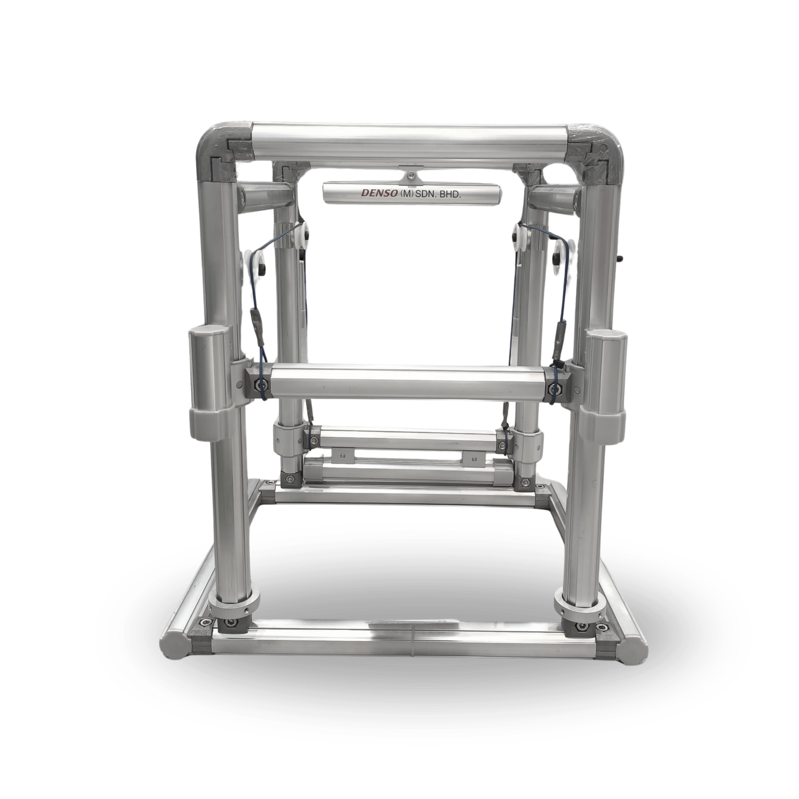

Pulley Karakuri
The pulley system is one of the simplest mechanical devices used in Karakuri mechanisms. By redirecting the path of a force, pulleys allow weights or objects to be lifted or moved with minimal effort, using nothing more than strings or belts.
In Karakuri, pulleys are often used to create smooth and silent motion transfer. Their passive nature makes them ideal for repetitive motion that requires synchronization between two components, contributing to sustainable and power-free automation.
Launch AR